Metro Route Map
Dhaka Metro Route Map (currently running)#
The Metro Rail Line-6 (MRT-6) connects Uttara North to Motijheel, serving major locations across Dhaka city. Use this interactive map to explore stations and plan your journey.
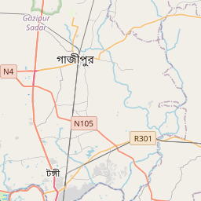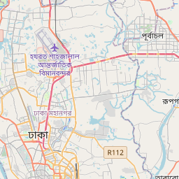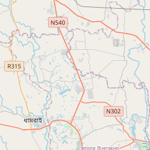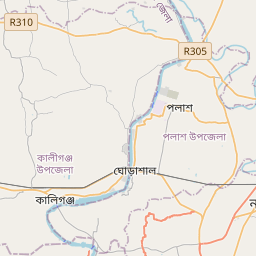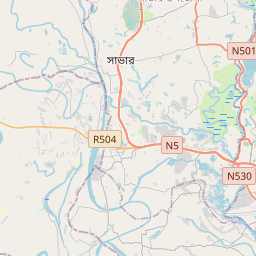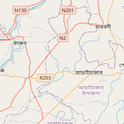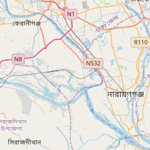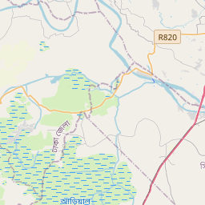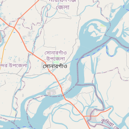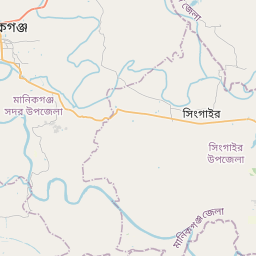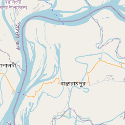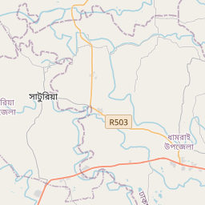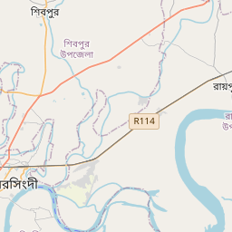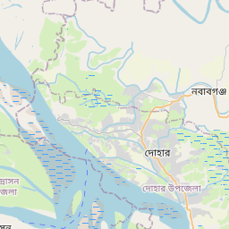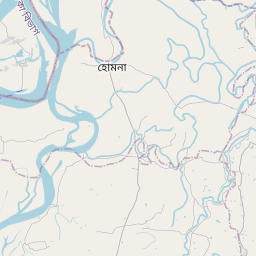
Leaflet © OpenStreetMap contributors